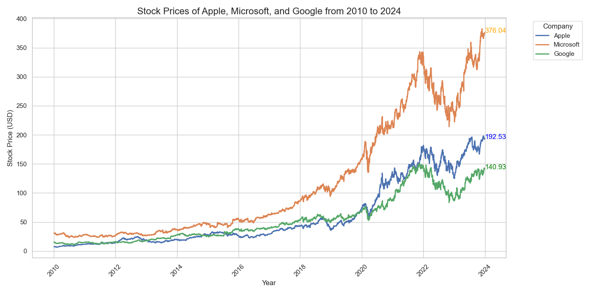
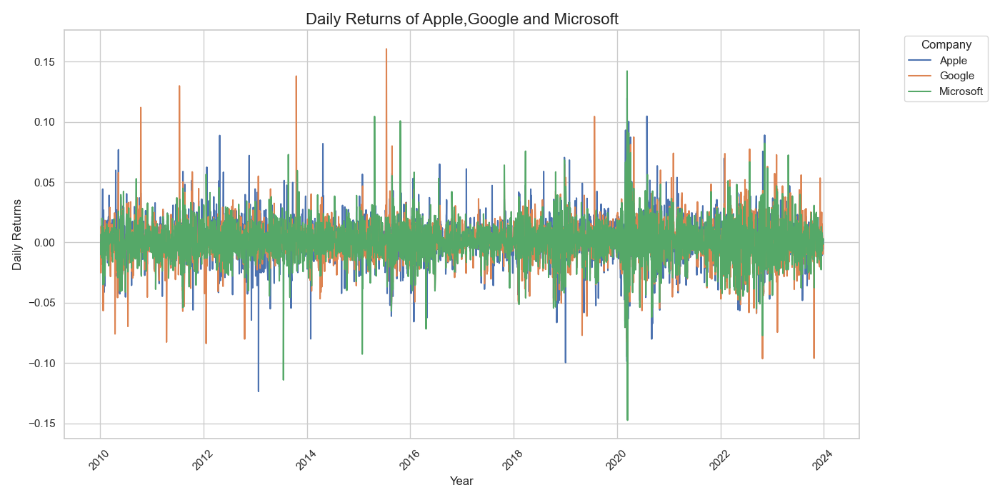

Data Collection
Upload the time series
From Yahoo Finance, we are collecting daily data on the closing prices of apple google and mcirosoft from 2010 to 2024.

We can see that all 3 stocks are trending upwards in a similar trend.
However, to see how the activities really behave, it is preferable to compute the returns of these time series. This will allow us to compare them

Now that we have our 3 stocks, let's work out how to create a risky portfolio with these 3 assets.
In Modern Portfolio Theory (MPT), a covariance matrix is vital as it quantifies the degree to which two stocks move in relation to each other. High covariance between two assets implies that they tend to move in tandem, which can increase the portfolio's risk. In contrast, assets with lower covariance can provide better diversification, reducing unsystematic risk and potentially improving the risk-return profile of the portfolio. Understanding these relationships through the covariance matrix is key to constructing an efficient frontier, aiming for maximum return for a given level of risk.
The diagonal, representing the variance of each stock, shows that each company has a distinct level of volatility. Off-diagonal elements, which represent the covariance between different stocks, suggest a moderate positive relationship between the stock returns. This implies that while the stocks do move in concert to some degree, they maintain enough independence to be considered for diversification within a portfolio, in line with the principles of Modern Portfolio Theory.
Using the covariance matrix derived from our data, our Python script pinpoints the asset combination that minimizes portfolio variance.
We've harnessed key Python libraries, such as NumPy for numerical calculations and SciPy's optimization tools. The script calculates stock characteristics from daily returns, and functions to determine the portfolio's annualized return and volatility are defined.
For the Optimal Risky Portfolio, our programming approach is tailored to maximize the Sharpe Ratio by employing Python's numerical and optimization libraries, NumPy and SciPy. The Sharpe Ratio is a critical measure of risk-adjusted return, with a higher ratio indicating a more desirable outcome.
The Minimum Variance Portfolio is crafted with a cautious investor in mind, featuring a diversified spread among Apple, Google, and Microsoft. The investment weights are distributed more uniformly, preventing any one stock from overly influencing the portfolio's performance.
Following the creation of our initial two portfolios, we are now proceeding to simulate 10,000 risky portfolios. The allocation of weights within these portfolios will be determined arbitrarily. This method allows us to capture a wide array of potential portfolio compositions, reflecting the diverse strategies that investors might employ.
The efficient frontier is drawn along the top edge, and the optimal risk portfolio is marked with a star, highlighting the maximum Sharpe ratio achieved. Shares in Apple, Microsoft and Google are highlighted, as is the minimum variance portfolio, providing a clear and concise overview of risk, return and optimal investment choices.
YahooFinance ->
Collect data
Computing efficient portfolio
Covariance Matrix between the 3 stocks
Minimum Variance Portfolio
Our optimization hinges on SciPy's 'minimize' function, aiming to find the lowest variance portfolio subject to our constraints on asset weights.
Optimal Risky Portfolio
In this project, we assume that the risk-free rate is equal to 5 %
Conversely, the Tangency Portfolio, or the Optimal Risky Portfolio, caters to those seeking more aggressive growth, which is reflected in its substantial weighting towards Apple.
Warning : Given that optimization algorithms, like the 'SLSQP' method from SciPy used in our code, are inherently designed to minimize rather than maximize functions, we adapt by considering the negative Sharpe Ratio. Such a concentrated investment in a single entity elevates the potential for greater gains, yet it also heightens the portfolio's susceptibility to the swings in Apple's stock prices.
Efficient Frontier with 10000 random Weighted Portfolio
What we can conclude ?
We have succeeded in building an efficient border with our 3 different assets. The difficulty of this project was that as soon as we wanted to create portfolios with more than 2 assets, it was practically impossible to do without librairis like Scipy to use the opitmisation functions.
References
Closing prices of shares used in this project -> Download csv file
GitHub Project -> Go to the project's github
About Me

Leprince Ludovic
Hello ! I am currently honing my skills and expanding my knowledge at NEOMA Business School, where I am deeply immersed in the intricacies of business and finance. Parallel to my academic pursuits, I serve as an Assistant Trader at the Medium-Long Term Funding desk of Crédit Agricole CIB (CACIB), where I apply my theoretical knowledge to real-world financial challenges, focusing on funding strategies and market dynamics.
I harbor a profound passion for market finance and the transformative potential of software development within this realm. With a solid foundation in Python, R, and VBA. I've embarked on numerous projects that not only demonstrate my programming skills but also my commitment to leveraging technology to solve complex financial problems. From financial modeling to the development of analytical tools, my work aims to enhance decision-making and operational efficiency in the finance sector.
My GitHub is a curated portfolio of my endeavors in bridging finance and technology, showcasing a range of projects that speak to my expertise and dedication.
I am eager to connect with professionals and enthusiasts who share my interests in the fusion of finance and technology.
If you're keen on discussing innovative solutions, exploring new projects, or simply connecting over shared interests, please do not hesitate to reach out
on LinkedIn to share projects and, let's hope, work together on new subjects !
Github
•
LinkedIn